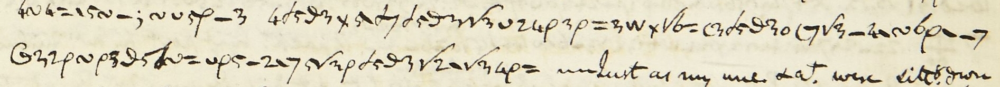

|
Crypt code
2 - a
( - b
) - c
o - d
3 - e
v - f
n - g
@ - h
4 - i
4 - j
1 - k
d - l
- - m
\ - n
5 - o
+ - p
‖ - q
p - r
= - s
~ - t
6 - u
g - v
8 - w
w - x
7 - y
9 - z
χ - mr
Ӿ - mrs
€ - miss
√ - th
Λ - sh
∇ - ch
x - and
∈ - bb
∋ - cc
; - ee
φ - ff
: - ll
⊥ - nn
! - oo
≠ - pp
P - rr
? - ss
≁ - tt
|
Info
More info on Anne Lister at en.wikipedia.org/wiki/Anne_Lister
More info on the diaries and how they were encrypted
Type crypt-hand in the "Original" window and it will be decrypted.
All of the crypt-hand should be in lower case, except for capital "P" (rr),
For special characters (√, Λ, ∇ etc) click the buttons or...
...type the "magical" characters (capital L, A, V etc) and they will be automatically converted to special characters.
Hidden "magical" character capital "O" converts into a white square □ for clearly noting unidentified characters
Special characters (unicode) are only approximations based on the shape of the symbols in the crypt-hand
In particular the symbols for "mr", "mrs", and "miss" (χ, Ӿ, € here) don't seem to have straight forward unicode equivalents
The symbol for "miss" in particular looks more like two euro symbols (€) back to back,..
...but since there is no unicode similar to that a single € euro symbol is used instead.
The symbol for "nn" (⊥ here) leans to the left in the crypt-hand.
Crypt-hand characters with a line through or below, or dot below means they are repeated.
For a clearer view of the symbols see the handwritten copy of the code from the West Yorkshire Archive Service
Wiki for decrypted dairy entries
Anne Lister Diaries Wiki - anyone can contribute!
Scans of Anne Lister's diaries are available at
West Yorkshire Archive Service
University of Huddersfield
Diary crypt-hand sample

source: SH:7/ML/E/4/0122
Transcript (with spaces inserted)
4 d5g3 x 5\d7 d5g3 √3 v24p3p =3w x √6= (3d5g3o (7 √3- 4\ ~6p\ -7 @32p~ p3g5d~= vp5- 2\7 5√3p d5g3 √2\ √34p=
Paste into the "Original" window to decrypt.
|
{kind=link}